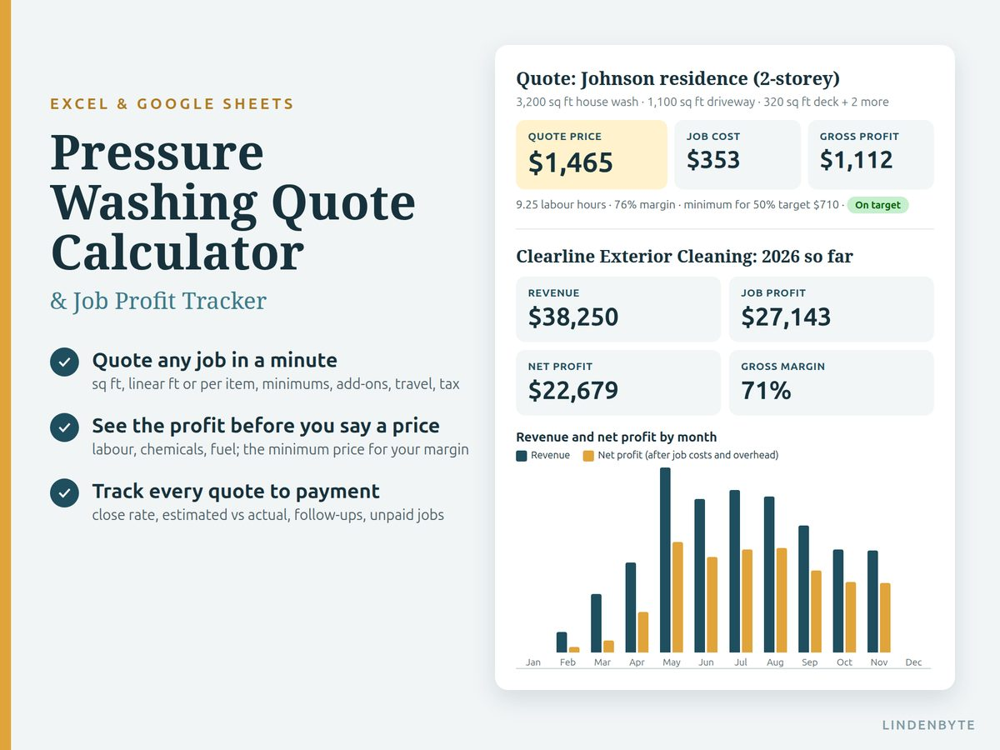
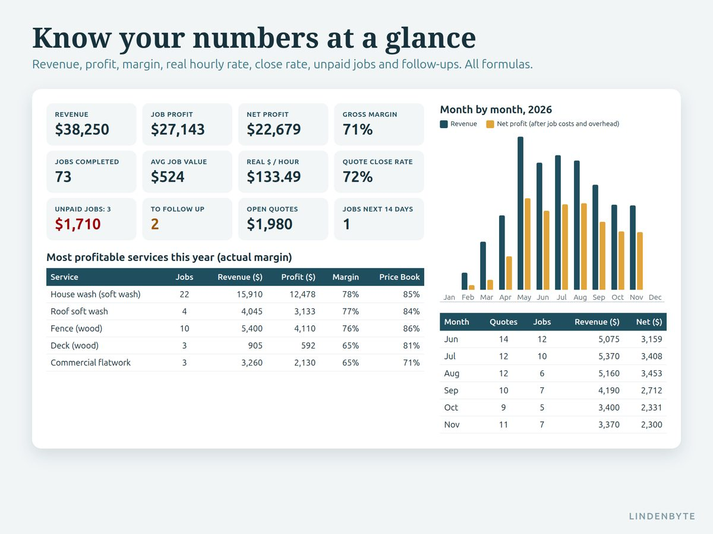
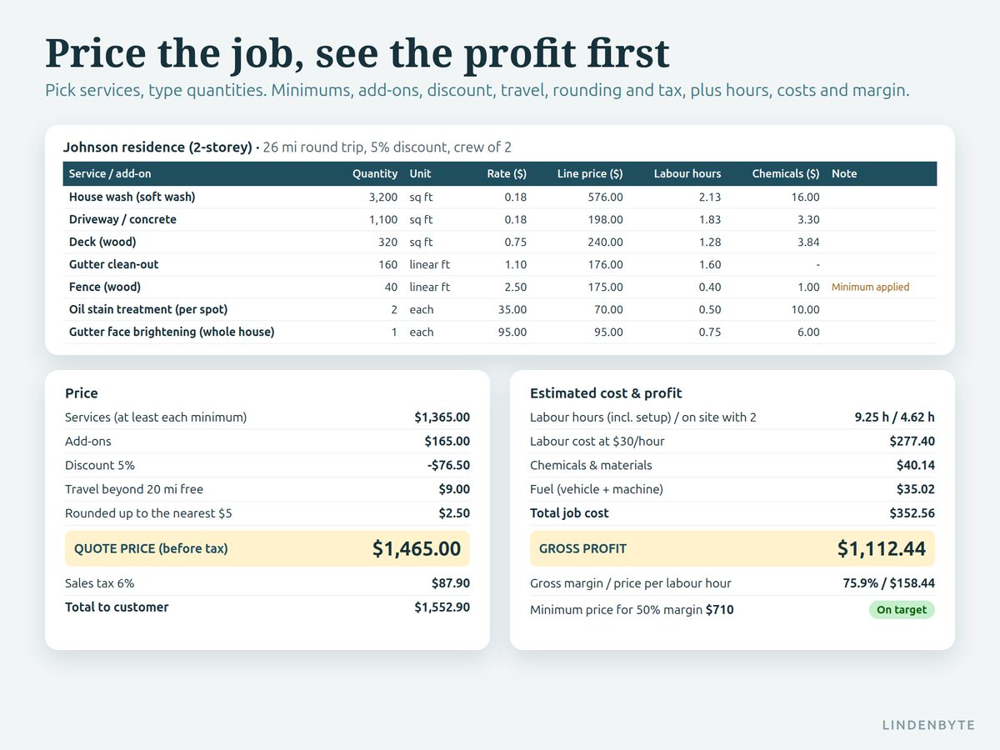

Spreadsheet templates / Pressure Washing Quote Calculator & Job Profit Tracker: Power Washing Pricing Spreadsheet
Pressure Washing Quote Calculator & Job Profit Tracker: Power Washing Pricing Spreadsheet
Quote every house wash, driveway, roof and deck the same way, see the profit before you give a price, and track each quote until it's paid. Made for owner-operator pressure washing and soft washing businesses and small crews.
Excel and Google Sheets · digital download · no macros

Quote every house wash, driveway, roof and deck the same way, see the profit before you give a price, and track each quote until it's paid. Made for owner-operator pressure washing and soft washing businesses and small crews.
What it does
- Quote Builder: pick services from a dropdown and type the quantity (sq ft, linear ft or per item). Each line is quantity x your rate, never less than that service's minimum charge. Add add-ons (oil stains, rust spots, gutter brightening, screens, bin washing...), a discount %, travel beyond your free distance, your minimum job price, rounding and sales tax. You also get estimated labour hours, time on site for your crew, labour, chemical and fuel cost, gross profit, margin, price per labour hour and the minimum price that still hits your target margin (On target / Below target)
- Price Book: your labour cost per hour, setup time, target margin, minimum job price, rounding, travel charge, vehicle and machine fuel costs, sales tax, plus up to 12 services (unit, rate, production rate, chemical cost per 1,000 units, minimum) and 8 add-ons. Calculated columns show each service's cost per unit, margin at your rate, revenue per labour hour and the lowest rate that still hits your target margin
- Job Log (1,000 rows): every quote from Quoted to Booked to Completed (or Lost). After the job, type actual hours, chemicals, distance and other costs: profit, margin, real hourly rate and flags (over hours, over cost, faster than estimate) are calculated. Quotes waiting too long say "Follow up", jobs in the next 14 days say "Upcoming", unpaid jobs past your payment window turn red
- Expenses: overhead log with category dropdown (insurance, equipment and repairs, marketing, software and more)
- Dashboard: revenue, job profit, net profit after overhead, gross margin, jobs completed, average job value, real hourly rate, quote close rate, unpaid total, quotes to follow up, open quotes value, upcoming jobs, most profitable services, a month-by-month table and 2 charts
- Any currency label, miles or km
What's included
One .xlsx file with 6 connected tabs: Start Here, Dashboard, Quote Builder, Price Book, Job Log, Expenses. An example exterior cleaning business (9 services, a year of quotes and jobs) is filled in so you can see how it works; clear it when you're ready.
How it works
- Excel: open the file (Excel 2010 or newer, Windows or Mac).
- Google Sheets: in Google Drive choose New > File upload, then open the file with Google Sheets (or File > Import). A free Google account is enough.
- Shaded cells are yours to edit; everything else calculates automatically. No macros, nothing locked.
Important
The example rates are placeholders, not market advice: prices vary a lot by region. Suggested prices come from the rates, production rates and costs you enter, so check them against what customers in your area pay. This is a pricing and record-keeping tool, not tax or legal advice; check the sales tax rules for your area (set 0% if your services aren't taxed).
FAQ
- Is anything physical shipped? No, this is a digital download only.
- What is the "real hourly rate"? Price minus chemicals, fuel and other job costs, divided by the hours worked: what one hour of work earned before paying anyone. Gross profit and margin also subtract your labour cost per hour.
- I work with a helper. Does it work for crews? Yes: enter the crew size on a quote to see time on site, and log total labour hours (all crew together) on each job. It is not a payroll tool.
- Can I use my own services and add-ons? Yes, rename and edit them on the Price Book (12 service rows, 8 add-on rows, 12 expense categories).
- Does it send quotes, invoices or reminders? No. It calculates the price and shows who to follow up with and who hasn't paid; you contact customers your usual way.
- Does it work on a phone? It opens in the Google Sheets and Excel apps, but it is easiest to use on a computer.
- Apple Numbers? Not supported; use Excel or Google Sheets.
- I'm stuck. Reply to your receipt email and we'll help.
Created by Lindenbyte with AI assistance; built, tested and reviewed by us. Personal use only. Please don't resell or share the file.

